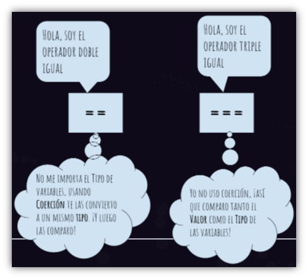

Operadores
Definición
Los operadores permiten manipular el valor de las variables, realizar
operaciones matemáticas con sus valores y comparar diferentes
variables. De esta forma, los operadores permiten a los programas
realizar cálculos complejos y tomar decisiones lógicas en función de
comparaciones y otros tipos de condiciones.
Tipos de operadores
Operadores aritméticos
|
Operador
|
Descripción
|
Ejemplo
|
| Residuo (%) |
Operador binario. Devuelve el resto entero de dividir los dos
operandos.
|
12 % 5 devuelve 2. |
| Incremento (++) |
Operador unario. Agrega uno a su operando. Si se usa como operador
prefijo (++x), devuelve el valor de su operando después de agregar
uno; si se usa como operador sufijo (x++), devuelve el valor de su
operando antes de agregar uno.
|
Si x es 3, ++x establece x en 4 y devuelve 4, mientras que x++
devuelve 3 y, solo entonces, establece x en 4.
|
| Decremento (--) |
Operador unario. Resta uno de su operando. El valor de retorno es
análogo al del operador de incremento.
|
Si x es 3, entonces --x establece x en 2 y devuelve 2, mientras
que x-- devuelve 3 y, solo entonces, establece x en 2.
|
| Negación unaria (-) |
Operador unario. Devuelve la negación de su operando.
|
Si x es 3, entonces -x devuelve -3. |
| Positivo unario (+) |
Operador unario. Intenta convertir el operando en un número, si
aún no lo es.
|
+"3" devuelve 3. +true devuelve 1. |
| Operador de exponenciación (**) |
Calcula la base a la potencia de exponente, es decir, baseexponente
|
2 ** 3 retorna 8. 10 ** -1 retorna 0.1. |
Operadores lógicos
|
Operador
|
Uso
|
Descripción
|
| AND Lógico (&&) |
expr1 && expr2 |
Devuelve expr1 si se puede convertir a false; de lo contrario,
devuelve expr2. Por lo tanto, cuando se usa con valores booleanos,
&& devuelve true si ambos operandos son true; de lo contrario,
devuelve false.
|
| OR lógico (||) |
expr1 || expr2 |
Devuelve expr1 si se puede convertir a true; de lo contrario,
devuelve expr2. Por lo tanto, cuando se usa con valores booleanos,
|| devuelve true si alguno de los operandos es true; si ambos son
falsos, devuelve false.
|
| NOT lógico (!) |
!expr |
Devuelve false si su único operando se puede convertir a true; de
lo contrario, devuelve true.
|
Operadores de comparación
|
Operador
|
Descripción
|
Ejemplos que devuelven true
|
| Igual (==) |
Devuelve true si los operandos son iguales.
|
- 3 == var1
- "3" == var1
- 3 == '3'
|
| No es igual (!=) |
Devuelve true si los operandos no son iguales.
|
|
| Estrictamente igual (===) |
Devuelve true si los operandos son iguales y del mismo tipo.
|
|
| Desigualdad estricta (!==) |
Devuelve true si los operandos son del mismo tipo, pero no
iguales, o son de diferente tipo.
|
|
| Mayor que (>) |
Devuelve true si el operando izquierdo es mayor que el operando
derecho.
|
|
| Mayor o igual que (>=) |
Devuelve true si el operando izquierdo es mayor o igual que el
operando derecho.
|
|
| Menor que (<) |
Devuelve true si el operando izquierdo es menor que el operando
derecho.
|
|
| Menor o igual (<=) |
Devuelve true si el operando izquierdo es menor o igual que el
operando derecho.
|
|

Operadores de asignación
|
Nombre
|
Descripción
|
Significado
|
| Asignación |
x = y |
x = y |
| Asignación de adición |
x += y |
x = x + y |
| Asignación de resta |
x -= y |
x = x - y |
| Asignación de multiplicación |
x *= y |
x = x * y |
| Asignación de división |
x /= y |
x = x / y |
| Asignación de residuo |
x %= y |
x = x % y |
| Asignación de exponenciación |
x **= y |
x = x ** y |
|
Asignación de desplazamiento a la izquierda
|
x <<= y |
x = x << y |
| Asignación de desplazamiento a la derecha |
x >>= y |
x = x >> y |
|
Asignación de desplazamiento a la derecha sin signo
|
x >>>= y |
x = x >>> y |
| Asignación AND bit a bit |
x &= y |
x = x & y |
| Asignación XOR bit a bit |
x ^= y |
x = x ^ y |
| Asignación OR bit a bit |
x |= y |
x = x | y |
| Asignación AND lógico |
x &&= y |
x && (x = y) |
| Asignación OR lógico |
x ||= y |
x || (x = y) |
| Asignación de anulación lógica |
x ??= y |
x ?? (x = y) |
Ejemplos
1 / 2;
1 / 2 == 1.0 / 2.0;
var a1 = true && true;
var a2 = true && false;
var o1 = true || true;
var o2 = false || true;
var n1 = !true;
var n2 = !false;
var mystring = 'alpha';
mystring += 'bet';